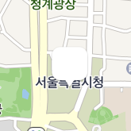
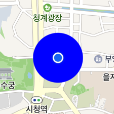
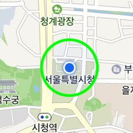

Location Overlay
Location overlay is a special overlay showing a user’s current location, and only one location overlay exists on the map. Similar to markers, it displays an icon to represent a user’s location. It also allows you to easily specify the direction, in which the user looks, and to add a sub icon, shadow and circle.
Access to object
An NMFLocationOverlay object is dependent on a map object. Since there is only one location overlay object on a map, you cannot directly create an instance; you should use the NMFMapView.locationOverlay property to get an instance. As it always belongs to the map, the mapView property cannot be changed. Even if you set nil or another map object in the mapView, nothing changes.
Therefore, you should change the visibility by using NMFOverlay.hidden to show or hide a location overlay.
The following code example gets a location overlay object from the map and changes the hidden property to YES.
let locationOverlay = mapView.locationOverlay
locationOverlay.hidden = true
Swift
let locationOverlay = mapView.locationOverlay
locationOverlay.hidden = true
Objective-C
NMFLocationOverlay *locationOverlay = self.mapView.locationOverlay;
locationOverlay.hidden = YES;
Coordinates and heading
The location property specifies the coordinates of a location overlay. The location overlay created first is located at the initial coordinates of the camera.
The following code example changes the coordinates of the location overlay.
locationOverlay.location = NMGLatLng(lat: 37.5670135, lng: 126.9783740)
Swift
locationOverlay.location = NMGLatLng(lat: 37.5670135, lng: 126.9783740)
Objective-C
locationOverlay.location = NMGLatLngMake(37.5670135, 126.9783740);
The heading property specifies the heading of a location overlay. Similar to the angle of a marker for which flat is YES, the icon is rotated on the map.
The following code example changes the heading of a location overlay to the east.
locationOverlay.heading = 90
Swift
locationOverlay.heading = 90
Objective-C
locationOverlay.heading = 90;
Icon
The location overlay uses an icon to show a user’s current location. The icon cannot be omitted, and its image and size can be changed.
Image
The icon property specifies the icon of a location overlay. Before specifying an icon, you should create an NMFOverlayImage object. NMFOverlayImage is a class that represents bitmap images that can be used by overlays. Using the factory methods defined in this class, you can create an instance from assets, UIImage, NSBundle and views.
The following code example specifies an icon for the location overlay.
locationOverlay.icon = NMFOverlayImage(name: "location_overlay_icon")
Swift
locationOverlay.icon = NMFOverlayImage(name: "location_overlay_icon")
Objective-C
locationOverlay.icon = [NMFOverlayImage overlayImageWithName:@"location_overlay_icon"];
The following figure shows a location overlay with the icon specified above.
Size
The iconWidth and the iconHeight properties specify the size of an icon.
The following code example sets each of the width and height of the location overlay icon to 20 pt.
locationOverlay.iconWidth = 20
locationOverlay.iconHeight = 20
Swift
locationOverlay.iconWidth = 20
locationOverlay.iconHeight = 20
Objective-C
locationOverlay.iconWidth = 20;
locationOverlay.iconHeight = 20;
The following figure shows a location overlay’s icon with the size specified above.
If you set iconWidth or iconHeight to NMF_LOCATION_OVERLAY_SIZE_AUTO, the default value, the width or height of the icon is adjusted to the size of the image.
The following code example sets the size of a location overlay icon to NMF_LOCATION_OVERLAY_SIZE_AUTO.
locationOverlay.iconWidth = NMF_LOCATION_OVERLAY_SIZE_AUTO
locationOverlay.iconHeight = NMF_LOCATION_OVERLAY_SIZE_AUTO
Swift
locationOverlay.iconWidth = NMF_LOCATION_OVERLAY_SIZE_AUTO
locationOverlay.iconHeight = NMF_LOCATION_OVERLAY_SIZE_AUTO
Objective-C
locationOverlay.iconWidth = NMF_LOCATION_OVERLAY_SIZE_AUTO;
locationOverlay.iconHeight = NMF_LOCATION_OVERLAY_SIZE_AUTO;
Anchor
Using the anchor property, you can make the position indicated by an image match the position where the location overlay is placed. Anchor is the point on the icon image that will be placed at the coordinates of the location overlay. An anchor point is a proportion value where the top left is (0, 0), and the bottom right is (1, 1).
This property is useful when the default location overlay image is not used. For example, if you specify an image that has a tail at the bottom center as the location overlay’s icon as shown below, the image points to the bottom center but the location overlay is anchored to the map based on the point at the center of the image, which makes a gap between the coordinates of the image and those of the location overlay.

In this case, set the anchor property to (0.5, 1), which means the bottom center, to clear the coordinates difference between the image and the location overlay.
The following code example sets the anchor of the location overlay to the bottom center of the icon.
locationOverlay.anchor = CGPoint(x: 0.5, y: 1)
Swift
locationOverlay.anchor = CGPoint(x: 0.5, y: 1)
Objective-C
locationOverlay.anchor = CGPointMake(0.5f, 1);
The following figure shows the location overlay with the anchor set to the bottom center of the icon.
Sub icon
A sub icon is an additional icon that is placed behind the main icon. Aside from the main icon, you can specify the image, size and anchor of a sub icon. As a sub icon cannot receive events, it is useful to display additional information.
The names of the properties of a sub icon are mostly the same as those of the main icon, except that they begin with sub, such as subIcon, subIconWidth, subIconHeight, and subAnchor. If subIcon is set to nil, a sub icon is not shown.
The following code example specifies a sub icon for the location overlay.
locationOverlay.subIcon = NMFOverlayImage(name: "location_overlay_sub_icon")
locationOverlay.subIconWidth = 40
locationOverlay.subIconHeight = 20
locationOverlay.subAnchor = CGPoint(x: 0.5, y: 1)
Swift
locationOverlay.subIcon = NMFOverlayImage(name: "location_overlay_sub_icon")
locationOverlay.subIconWidth = 40
locationOverlay.subIconHeight = 20
locationOverlay.subAnchor = CGPoint(x: 0.5, y: 1)
Objective-C
locationOverlay.subIcon = [NMFOverlayImage overlayImageWithName:@"location_overlay_sub_icon"];
locationOverlay.subIconWidth = 40;
locationOverlay.subIconHeight = 20;
locationOverlay.subAnchor = CGPointMake(0.5f, 1);
The following figure shows a location overlay with the sub icon specified above.
Circle
You can add a circle to highlight the location overlay. A circle is drawn behind the sub icon, and its size, color and outline can be specified.
Size
The circleRadius property specifies the radius of a circle. Set the radius to 0, and the circle does not appear. Since the radius is measured in pt, you need to use NMFCircleOverlay that shows the geographic size, in order to represent the information such as location accuracy.
The following code example sets the radius of a circle for a location overlay to 50 pt.
locationOverlay.circleRadius = 50
Swift
locationOverlay.circleRadius = 50
Objective-C
locationOverlay.circleRadius = 50;
The following figure shows a circle with the radius of 50 pt added to the location overlay.
Fill color
The circleColor property specifies the fill color of a location overlay’s circle.
The following code example sets the fill color of a location overlay’s circle to blue.
locationOverlay.circleColor = UIColor.blue
Swift
locationOverlay.circleColor = UIColor.blue
Objective-C
locationOverlay.circleColor = UIColor.blueColor;
The following figure shows a location overlay’s circle with the fill color set to blue.

Stroke width
The circleOutlineWidth property specifies the stroke width of a circle. Set the property to 0, and no outline is drawn.
The following code example sets the stroke width of a circle of a location overlay to 10 pt.
locationOverlay.circleOutlineWidth = 10
Swift
locationOverlay.circleOutlineWidth = 10
Objective-C
locationOverlay.circleOutlineWidth = 10;
The following figure shows a location overlay’s circle with the stroke width set to 10 pt.
Stroke color
The circleOutlineColor property specifies the stroke color of a circle.
The following code example sets the stroke color of a location overlay’s circle to green.
locationOverlay.CircleOutlineColor = UIColor.green
Swift
locationOverlay.CircleOutlineColor = UIColor.green
Objective-C
locationOverlay.circleOutlineColor = UIColor.greenColor;
The following figure shows a location overlay’s circle with the stroke color specified as green.
